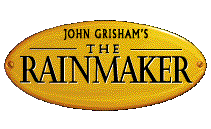
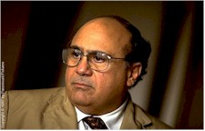
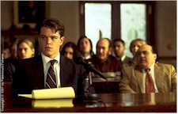
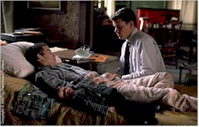

Contents | Features | Reviews | Books | Archives | Store |
 |
|
| Movie Credits | Buy It! |
John Grisham's The Rainmaker
Review by Eddie Cockrell
Posted 21 November 1997
|  | Directed by Francis Ford Coppola Starring
Matt Damon, Claire Danes, Jon Voight, Screenplay by Francis Ford Coppola, Narration written by Michael Herr |
Movies produced during the period of Hollywood's so-called Golden Age, roughly those years between 1930 and 1945 when the dream machine was at the glamorous peak of imagination and efficiency, provide unique and distinct pleasures when viewed today. Deliberately paced and concerned more often than not with character over circumstance, these films endure precisely because of their careful craftsmanship and attention to detail at every level; remember, the studio system of old was for all intents and purposes an assembly line (that's why these movies are so visually absorbing on electronic screens far smaller than the medium for which they were made).
While perhaps not a film for the ages (percentage-wise, very few of the studio's efforts are either), John Grisham's The Rainmaker yields many of those same pleasures and marks yet another chapter in the extraordinary career of director Francis Ford Coppola. Elegant, deliberate, and more than a bit mischievous (glamorous it's not), the movie is very much like the image projected by the filmmaker himself. Like-minded audiences in should gravitate to the film in large numbers as a rewarding alternative to louder, flashier and more superficial holiday fare.
Honest and self-deprecating, young law school grad Rudy Baylor (Damon) aspires to not only do good in his much-maligned profession but be a "rainmaker" as well, seeking out clients with potentially lucrative legal beefs to enrich his status in whichever firm has the foresight to retain him. For the moment, however, Rudy is tooling around Memphis with his possessions lashed to the roof of his car (he's been evicted), tracking down leads in partnership with cheerful ambulance chaser Deck Shifflet (DeVito) for shady boss J. Lyman "Bruiser" Stone (Mickey Rourke).
Rudy's three seemingly unrelated current cases include the murky estate of timorous but tart senior citizen Miss Birdie (Wright), the plight of young battered wife Kelly Riker (Danes) and the medical dilemma of leukemia patient Donny Ray Black (Whitworth), whose experimental treatment is refused by the Great Benefit Insurance company despite the dogged letter-writing efforts of his mother Dot (Mary Kay Place) and to the silent, alcoholic despair of his father Buddy (Red West). "There's nothing more thrilling than nailing and insurance company," says Deck wistfully, perhaps envious that Rudy nails the bar exam on his first try (Shifflet's failed six times to date). Deciding that they could do better on their own, the young and earnest attorney joins forces with the cynical "paralawyer" in their own threadbare firm.
As Rudy works his way earnestly through the first two cases, the third begins to take on David and Goliath proportions, with Baylor cast as the latter doing courtroom battle with legal heavyweight Leo F. Drummond (Voight) and his phalanx of smooth associates under the benevolent but watchful eye of Judge Tyrone Kipler (Danny Glover, uncredited).
While the outcome of these three story strands are rarely in doubt, the movie envelops the audience in a faded, seedy, contemporary Memphis milieu that is persuasively daunting yet oddly benevolent. And far from "just another shark in dirty water," as the clever credit gag and bouncy yet hard-boiled narration (penned by Michael Herr, who did similar duty on Coppola's Apocalypse Now) would have you believe of the much-maligned legal profession, the autobiographical tone of Grisham's book – part memoir, perhaps? – has been preserved and enhanced by Coppola's clever direction. With natural, almost bumbling movement taking place in dilapidated houses, cluttered yards and dark courtrooms, the movie presents a good vs. evil story that casts the ongoing debates of health care, punitive damages, spousal abuse and other hot-button societal issues in a very human light. This is perhaps the least flamboyant and most plausible courtroom drama ever made.
It isn't difficult to see what attracted Coppola to this material. Like Orson Welles before him, who according to one of many legends mollified an insistent producer while on an airport pay phone by yelling out the first title he could make out from the paperback rack at the adjacent newsstand (that's how Touch of Evil got made), Coppola recently revealed to "Entertainment Weekly" that he picked up "The Rainmaker" on a whim while boarding a flight to Paris because "I thought it would be fun to read a best-selling book... Maybe I could learn what the public wants." At the same time, the idealistic and easygoing character of Rudy Baylor must've appealed to Coppola's strong streaks of fair play and endurance – traits that have served the filmmaker well during a career of extremes stretching from the phenomenally successful Godfather films to the sweet but sadly underrated 1996 Robin Williams vehicle Jack (itself a property given unexpected autobiographical resonance by the ever young-thinking director).
While certainly no Touch of Evil, John Grisham's The Rainmaker is a sensible, moderate entertainment – arguably just what a certain disenfranchised segment of the movie-going public (read: older audience) is looking for (one quick note on the ungainly title: with this, the sixth movie adapted from his novels, the author ascends to a rarified but not necessarily quality-guaranteed possessory credit stratosphere that includes Jacqueline Susann and Stephen King).
As befits the source material and repertory tone, the acting is distinctive without being overly showy. Voight and Glover give perhaps the most memorable performances, in roles that invite idiosyncratic flourishes – a wave of the arm, an arch of the eyebrow – without the kind of distracting showboating that has dogged both careers (they've never been bad, exactly, just kind of annoying). The film's most resonant tribute to old-style Hollywood comes in the form of Teresa Wright (Mrs. Miniver, Pride of the Yankees, Shadow of a Doubt, The Men, The Best Years of Our Lives), who brings a feisty dignity to the role of Miss Birdie after a big-screen layoff of almost a decade (she was in The Good Mother). Damon makes an interesting lead in the sincere tradition of Mickey Rooney or a very young Jimmy Stewart with a role that is by nature reactive instead of active, while Danes brings a tremulous quality to her portrayal of a battered wife who finds a perhaps unexpected inner strength. Coppola's skill as a director comes to the fore with his coaching of secondary performances from a cast as distinctive as sitcom veteran Mary Kay Place and Dean Stockwell, as iffy as Roy Scheider (great as the spacey, almost creepy CEO of Great Benefit) and as green as Johnny Whitworth and country superstar Randy Travis (in a blink-and-you'll-miss-him turn as a juror).
Always a proponent of meticulous production design, logical pacing and distinctive cinematography, Coppola has enlisted designer Howard Cummings (The Usual Suspects), regular cutter Barry Malkin (The Godfather Part III, Jack), and back-to-back Oscar winning photographer John Toll (Legends of the Fall, Braveheart) to give the film a distinctive, real-life personality that culminates spectacularly in the climactic courtroom sequences. Unlike many of the other actual locations, this atmospheric space was constructed in an unused airplane hangar at the about-to-be-decommissioned Alameda Naval Air Station across the bay from San Francisco. "It's very hard to re-invent the courtroom but Francis really wanted to," remembers Cummings in the press material for the film. "It's a civil not a criminal case, although in our civil case there is a life and death struggle. But the basics of the law are being addressed and I felt that austerity would be more unusual at this point than what we've seen so far, and with this kind of [wide-screen] framing, you can really explore something like that." The gambit works, as the sequences have all the tension but none of the pretensions found in most courtroom scenes; the space is as much a star of the picture as any of the actors.
A jaded movie-going companion at a recent public screening of John Grisham's The Rainmaker defended her purchase of cellophane-swathed bonbons by insisting she'd only unwrap them "during the explosions." Imagine her surprise – and yours – when the movie reveals itself as concerned more with human interaction than random detonation. Credit Coppola's astute elevation of an airplane read (shades of The Godfather!) to his graceful worldview and commitment to emotional quality. The filmmaker should be entering his own Golden Age just about now, and if we're all very lucky the success of this well-tooled enterprise will allow him to pursue the projects that have in the past resulted in his bravest and most thrilling work.
Contents | Features | Reviews | Books | Archives | Store
Copyright © 1999 by Nitrate Productions, Inc. All Rights Reserved.